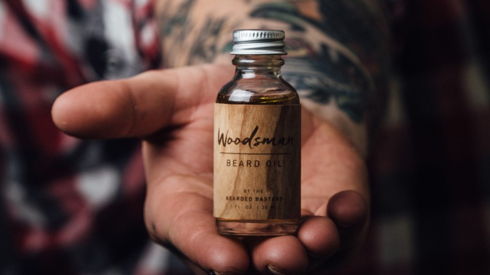

BEARD BALM OR BEARD OIL

Beard balm or beard oil? This may be the most frequent question we get asked at The Mod Cabin. Some people say they are one and the same. This simply is not true. Beard balm is a pomade made by mixing, heating and cooling moisturizers and sealants. Beard oil is a leave in moisturizer and conditioner made by mixing carrier oils with essential oil blends or in some cases fragrance oils. In this post we will explain the differences between beard balm and beard oil and when to use each. We will start with beard balm.
BEARD BALM
Beard balm is a styling and shaping aid as well as a leave in beard conditioner. A good beard balm should moisturize your facial hair, provide hold for styling and make your beard look thicker. For best results, avoid beard balms using synthetic sealants like petroleum jelly as they may irritate your skin and damage facial hair. Find a beard balm that contains all natural sealants like shea butter, beeswax or lanolin. These ingredients are natural, help your beard look thicker and are less likely to irritate your skin.
If you have a patchy or thin beard, consider using a beard balm with shea butter, as shea is especially good at making facial hair appear thicker. In addition to all natural sealants, make sure your beard balm contains all natural moisturizers like jojoba or argan oil. Without the moisturizers, the sealants will just seal in dryness, making your beard brittle and prone to breakage. A quality beard balm containing all natural moisturizers and sealants will moisturize, condition and provide hold for shaping and styling as well as make your beard look thicker. If you are looking for an all-in-one leave in beard conditioner and styling aid that is easy to use, all natural beard balm is for you.
BEARD OIL
Beard oil is an easy to use moisturizer and leave in conditioner that comes in a bottle or pump. Quality beard oils will moisturize the skin underneath your beard, soften your facial hair, reduce itching and create the conditions for healthy beard growth. For best results, use a beard oil with a jojoba or argan base. Jojoba and argan are the best facial hair moisturizers and both have a long shelf life.
In addition to being a great moisturizer, beard oil can act as a beard deodorizer and cologne. Look for a beard oil scented with an essential oil blend, not with fragrance oils. Essential oils are distilled from nature whereas fragrance oils are synthetic and can potentially damage your beard. If you are looking for an easy, simple and quick way to moisturize and condition your facial hair, reduce the itching of early growth and create the conditions for healthy beard growth, all natural beard oil is for you.
HOW TO USE BEARD BALM
Beard balm is a great all-in-one beard moisturizer, conditioner and styling aid that is especially helpful for people who want their beards to look thicker. For best results, wash your beard with an all-natural beard soap and apply beard balm when dry. Scrape out a dime sized amount of balm and rub between your palms. Run your fingers through your facial hair, starting from the neck and working up, making sure to rub balm into the skin where your beard grows.
This will help nourish facial hair at the roots. Reverse and run your fingers through your beard in a downward motion from top to bottom, spreading the balm down the hair follicles. Don’t forget your moustache and the hair around your mouth. Brush the balm through your beard with a boars hair beard brush to distribute the balm evenly through your beard. Use the boars hair brush to straighten your beard, or scrunch facial hair in fists to accentuate curl. Use up to three times a day as needed. All natural beard balms containing shea butter and beeswax can be left in until you wash your beard. Beard balms containing petroleum jelly should be rinsed out nightly to avoid damage to facial hair.
HOW TO USE BEARD OIL
Beard oil is an easy to use beard moisturizer and conditioner that will moisturize the skin underneath your beard, soften facial hair and help create the conditions for healthy beard growth. Beard oil is especially helpful during the first six weeks of beard growth when itching can be a problem. If you have a naturally thick, long beard, you may find beard oil easier to work with than beard balm.
Beard oil can be used in conjunction with beard balm or as a stand alone product. For best results wash your beard with an all natural beard soap and apply beard oil when dry. Splash a dime size amount of beard oil in your palm and massage into your skin and beard. Brush the oil through your beard with a boars hair beard brush to help distribute the oil evenly throughout your facial hair. Use up to three times a day as needed. Like all natural beard balm, beard oil does not need to be rinsed out.